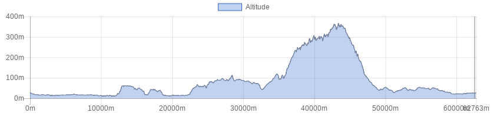

<!doctype html>
<html class="no-js" lang="en" dir="ltr">
  <head>
    <meta charset="utf-8">
    <meta http-equiv="x-ua-compatible" content="ie=edge">
    <meta name="viewport" content="width=device-width, initial-scale=1.0">
    <title>Foundation for Sites</title>
    <link rel="stylesheet" href="css/foundation.css">
    <link rel="stylesheet" href="css/app.css">
  </head>
  <style type="text/css">
  
  
h1.blu {
background-color: #2f5a55;
color: white;
font-size: 1.75rem; 
}

h1.verde {
background-color: #008e80;
color: white;
font-size: 1rem; 
}


h1.bianco {
background-color: white;
color: #506487;
font-size: 1rem; 
}

button.radius, .button.radius {
    border-radius: 3px; font-size:12px;
    }
  button.round, .button.round {
    border-radius: 1000px; font-size:1.2em; background-color:#3fa537}

</style>
  <body>
    <div class="grid-container">
      <div class="grid-x grid-padding-x">
        <div class="large-12 cell">
          <h1 class="verde">&nbsp;</h1>
        </div>
      </div>
      
       <div class="grid-x grid-padding-x">
        <div class="large-12 cell">
        <table>
        <tr>
        <td></td>
        <td><b>Marshland of Fucecchio, Vinci, San Baronto</b></td>
        </tr>
        </table>
        
        </div>
      </div>
      
      <div class="grid-x grid-padding-x">
        <div class="large-12 cell">
          <h1 class="verde">&nbsp;</h1>
        </div>	
      </div>
      
      <!------ inizio tabella --->
       <div class="grid-x grid-padding-x">
        <div class="large-12 cell">
        <table>
        
        
         <tr>
        <td><b>Difficulty level</B></td>
        <td></td>
        </tr>
        
        <tr>
        <td><b>Lenght</B></td>
        <td>62 Km</td>
        </tr>
        
        <tr>
        <td><b>Gap</B></td>
        <td>782 + / 782 -</td>
        </tr>

        <tr>
        <td><b>Season</B></td>
        <td>All year</td>
        </tr>

        <tr>
        <td><b>Ground</B></td>
        <td>Paved road</td>
        </tr>
        
        <tr>
        <td><b>Description</B></td>
        <td>
        
        Stile roadbook        </tr>
        
        
        <tr>
        <td><b>Info on track</B></td>
        <td>
        With its 2,000 hectares the Padule di Fucecchio is the largest Italian marshy area.
Thanks to the richness of the flora and fauna and the hydrogeological and landscape peculiarities, the Padule territory is protected as a natural reserve.
Riding  along the Montalbano hills you will arrive at the famous village of San Baronto, the legendary climb is a training place for the greatest Tuscan professional cyclists , such as the winner of the Tour de France, Nibali.
Obviously you can not miss the coffee break in Vinci, a country where the great Leonardo was born. Possible visit to the house and the museum.

        </td>
        </tr>

       
       <tr>
        <td><b>Lodging</B></td>
        <td><a href="http://www.bikeexperience.tuscany.it/montecatini-bike-hotels/">Link</a></td>
        </tr>
        
        
        <tr>
        <td><b>Eating</B></td>
        <td>
        
     Al Ristoro<br>
Via Capannone, 89<br>
51019 Ponte Buggianese – Località Anchione<br>
Phone: <a href="tel:0572634001">0572 634001</a><br>
Mobile: <a href="tel:3337196339">333 7196339</a><br>
<a href="http://www.ristorantealristoro.it/">Website</a>
</td>
        </tr>
        
        <tr>
        <td><b>Starting point</B></td>
        <td>
        
    By car or public transport
</td>
        </tr>
        
        </table>
        
        </div>
      </div>
      <div class="responsive-embed" style="width:75%; margin-left:auto; margin-right:auto;">
                <iframe  src="./sentieri/monte_padule2.html" frameborder="0" allowfullscreen></iframe>
        </div>
    
   <div class="grid-x grid-padding-x">
        <div class="large-12 cell"><center>
          </center>
        </div>
      </div>
  
  
  <div class="grid-x grid-padding-x">
        <div class="large-12 cell"><center>
        <a href="road.html" class="button   round">Back</a><center>
        </div>
      </div>
    </div>

    <script src="js/vendor/jquery.js"></script>
    <script src="js/vendor/what-input.js"></script>
    <script src="js/vendor/foundation.js"></script>
    <script src="js/app.js"></script>
  </body>
</html>
